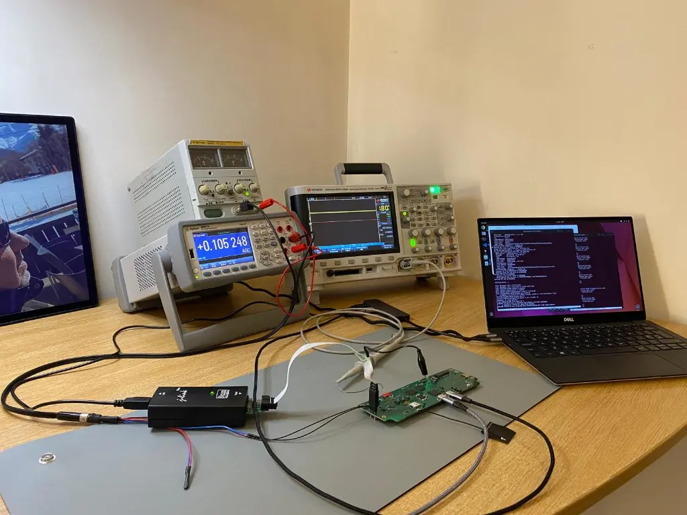

Insights · 26th October 2025
When the hardware lab becomes part of the product platform.
A remotely accessible bench is more than convenience. Designed properly, it lets hardware, software and customer teams work against the same real boards without turning shipping into the development schedule.

This was a milestone we had been working towards for a long time: a hardware lab that could be used as part of a distributed engineering system rather than as a room that only helped the person standing inside it.
What the lab needed
- an isolated test network for embedded boards under development
- Linux development systems for programming and serial access
- controlled power cycling when a target stopped responding
- VPN access for authorised remote engineering
- secure over-the-air delivery through Foundries.io
- networked instruments for measurements such as low-power behaviour
None of those elements is extraordinary on its own. The value appears when they are treated as one workflow.
One board, several disciplines
Hardware engineers can work on electrical behaviour. Software engineers can build, deploy and inspect the same target. A customer team can test its containerised application against the programme hardware. The board remains in a controlled environment while the people who need it work from the location that makes sense.
That removes a surprising amount of waste. Hardware does not have to circulate around the country for every software question, and a board does not disappear from one discipline while another uses it.
Agents make the loop faster, not less accountable
Once the lab could be reached safely, an engineering agent could connect through the same controlled path, build code, deploy it to a target, run a test and return logs from live hardware. That is where AI-assisted development becomes more interesting than generating code in an editor.
The important controls remain ordinary engineering controls: scoped access, known targets, recoverable power, observable output and a human decision about whether the result is acceptable. Remote access should narrow authority, not blur it.
From remote bring-up to repeatable testing
The immediate benefit was flexible prototyping. The longer-term value was a route to automated board testing: known images, repeatable power cycles, instrument readings and evidence attached to a release.
A connected product platform is not only the PCB or the Linux image. It is also the environment that lets the team reproduce faults, verify changes and maintain the product after the first units leave the bench.